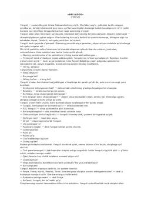

HBolalikdagi murosasizlik va qiyin sinovlar haqidagi ta'sirli hikoya.
Nodar Dumbadzening mazkur hikoyasida Suxumi shahrida yashovchi bolalar hayoti, ularning o'ziga xos munosabatlari va bolalik davridagi sinovlar tasvirlangan. Asar bosh qahramoni Yanguli va uning tengdoshi o'rtasidagi ziddiyat, mushtlashuv va keyinchalik yuzaga kelgan murakkab munosabatlar haqida hikoya qiladi. Hikoya insoniylik, g'urur va bolalik taqdirlari haqida o'ylashga undaydi.